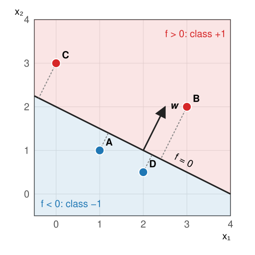

The first unit of the day on support vector machines. Before margins and kernel functions, the object they improve: a straight line (a plane, a hyperplane) that splits a feature space in two.
Pixels, objects and windows all become points with labels.
A threshold is already a linear classifier; in 2D it is a line, f(\mathbf x) = \mathbf w \cdot \mathbf x + b.
Geometry: \mathbf w is the normal, b shifts the line, f/\|\mathbf w\| is the signed distance.
Many lines separate the training points: which one? Nearest class mean is one answer.
When no line works: XOR, a ring around a blob.
Slides titled The math give the formulas and proofs; the ideas are complete without them.
Recall: classification (the random forests day)
A pixel, an object or an image window is a point in a feature space, with a label that someone painted or typed.
A classifier colours the feature space: every point gets a class.
Fit on training data; choose settings on validation data; report on test data, touched once.
Overfitting: perfect on the training points, wrong on new ones. Cross-validation rotates the validation part.
All of this is taught on the random forests day; here we only use it.
Three ways image analysis becomes classification
Pixels: each pixel gets a vector from a stack of filtered images (intensity, smoothed at several scales, edges, blobs, texture). Label: nucleus / cytoplasm / background.
Objects: each segmented object is a row of the measurement table (area, mean intensity, form factor, texture). Label: dividing / not dividing, cell / debris.
Windows: a patch around each position is described by a vector (e.g. histograms of gradient directions). Label: “cell here” / “no cell”.
In all three: a point in a feature space, with a label. The rest of the day works on such points; the pictures are 2D, the real spaces have tens or hundreds of axes.
A threshold is a linear classifier
The thresholding day: a pixel is object if its intensity x > t.
Write it as f(x) = x - t and decide by the sign: f > 0 → object, f < 0 → background.
Two features: f(\mathbf x) = w_1x_1 + w_2x_2 + b. The boundary f = 0 is a line.
d features: f(\mathbf x) = \mathbf w \cdot \mathbf x + b, the boundary is a hyperplane (a flat surface of dimension d - 1).
Labels on this day are y = +1 and y = -1, so “correct” means y\,f(\mathbf x) > 0.
The geometry of a line

f(\mathbf x) = x_1 + 2x_2 - 4, so \mathbf w = (1, 2), b = -4.
\mathbf w is perpendicular to the line and points to the + side.
bshifts the line along \mathbf w.
f(\mathbf x)/\|\mathbf w\| is the signed distance to the line.
Point A = (1, 1): f = -1, distance -1/\sqrt5 = -0.45. B = (3, 2): f = 3, distance +1.34.
Scaling changes nothing
Multiply \mathbf w and b by the same c > 0: f is multiplied by c.
The sign of f is unchanged: the same line, the same decisions.
The distancef/\|\mathbf w\| is unchanged: c cancels.
Only the value of f changes. So “f = 1” means nothing until we fix the scale.
The next unit uses exactly this freedom: it fixes the scale so that the closest points have f = \pm 1.
The math: distance to a hyperplane
Let \mathbf x_0 be any point on the hyperplane, \mathbf w\cdot\mathbf x_0 + b = 0. The distance of \mathbf x is the length of the projection of \mathbf x - \mathbf x_0 on the unit normal \mathbf w/\|\mathbf w\|:
It uses only two numbers per class; it ignores the shape of the clouds. Long, slanted clouds defeat it.
The math: nearest class mean is linear
\|\mathbf x - \boldsymbol\mu_-\|^2 - \|\mathbf x - \boldsymbol\mu_+\|^2 = 2(\boldsymbol\mu_+ - \boldsymbol\mu_-)\cdot\mathbf x - \left(\|\boldsymbol\mu_+\|^2 - \|\boldsymbol\mu_-\|^2\right).
The squares \|\mathbf x\|^2 cancel. Half of this is f(\mathbf x) = \mathbf w\cdot\mathbf x + b with
\mathbf w = \boldsymbol\mu_+ - \boldsymbol\mu_-, \qquad b = -\tfrac12\left(\|\boldsymbol\mu_+\|^2 - \|\boldsymbol\mu_-\|^2\right) = -\mathbf w\cdot\frac{\boldsymbol\mu_+ + \boldsymbol\mu_-}{2}.
f > 0 exactly when \boldsymbol\mu_+ is the closer mean. With a shared covariance matrix \Sigma in the distance (\mathbf w = \Sigma^{-1}(\boldsymbol\mu_+ - \boldsymbol\mu_-)) the rule is still linear: that is linear discriminant analysis.
Try it: nearest mean is not the best line
Generative or discriminative?
Two ways to get a classifier from labelled points:
Generative: describe each class by a probability model (e.g. a Gaussian per class), then ask which class makes \mathbf x more likely. The thresholding day’s minimum-error threshold is the 1D case; the Gaussian mixtures day fits such models, even without labels.
Discriminative: never describe the classes, only look for a boundary that separates them. Nearest-mean is in between; the SVM is purely discriminative.
A discriminative method spends its effort near the boundary, where the decisions are made, not in the middle of the clouds.
One neuron is a linear classifier
The neural networks day: a neuron computes \mathbf w\cdot\mathbf x + b and passes it through a bend.
With a sign output it is exactly our f: a linear classifier.
The perceptron rule moves the line one point at a time: for a wrong point, \mathbf w \leftarrow \mathbf w + y\,\mathbf x, b \leftarrow b + y. It stops at some separating line, whichever it hits first.
An SVM and a logistic neuron differ only in what they minimise (next unit: the hinge loss and the margin).
When no line works
XOR: opposite corners share a class. Any line makes at least about a quarter of errors (in the demo, the best line still has 14 of 60 wrong).
A ring around a blob: a nucleus (inside) and its cytoplasm (around), in two intensity features: the inside cannot be cut out by a line.
Options: more features (unit 3: add x_1x_2, or x_1^2 + x_2^2, and a line works again), a non-linear method (1-NN, trees, networks), or the SVM’s kernel functions (unit 3).
Summary
Pixels, objects and windows become points with labels in a feature space.
A linear classifier decides by the sign of f(\mathbf x) = \mathbf w\cdot\mathbf x + b: a threshold in 1D, a line in 2D, a hyperplane in d dimensions.
\mathbf w = normal, b = offset, f/\|\mathbf w\| = signed distance; scaling (\mathbf w, b) changes nothing.
Many lines separate the training data. Nearest class mean is a line through the midpoint, perpendicular to \boldsymbol\mu_+ - \boldsymbol\mu_-; it ignores the shape of the clouds.